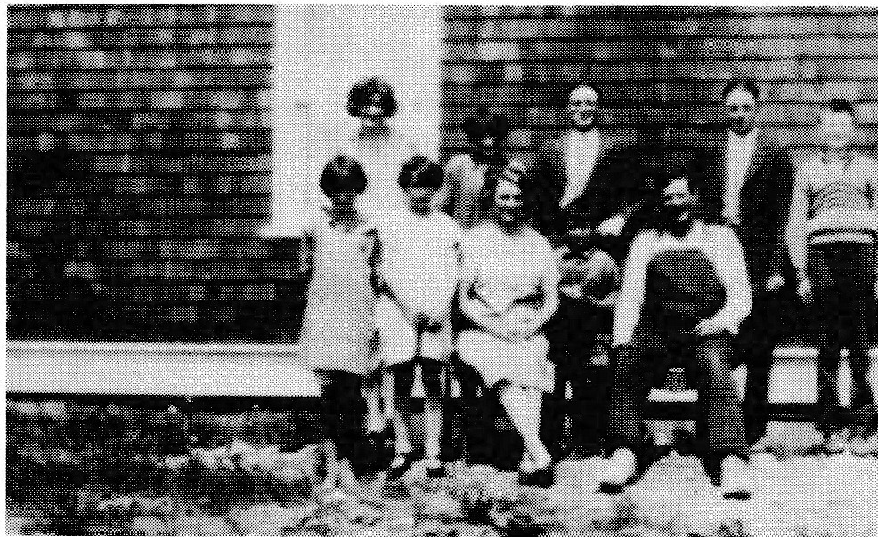
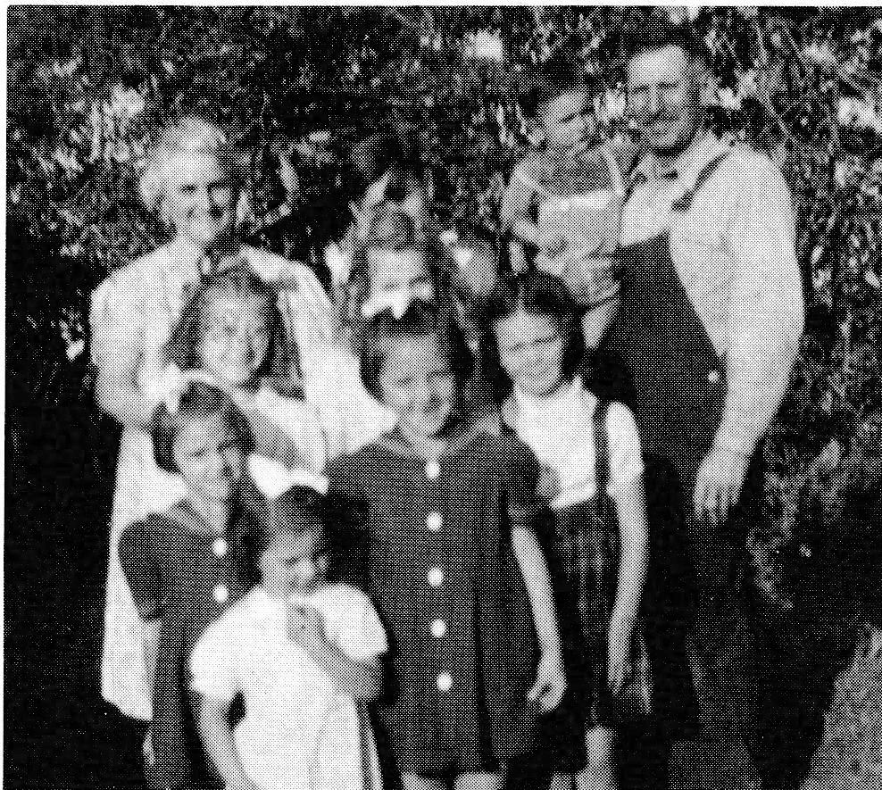

the district were heard to remark, "We were not certain in those years if there was a Mrs. Alain." When she did go to visit, it was usually to the home of Rachel Strasser whom Alma had known in Delmas.

That fall Henri rented Louis Veillard's sawmill. The mill was located between the railroad tracks and the future site of the Catholic Church. October saw the first snowfall and that was when Smokey and Louis began skidding logs.
Once cut down, the trees were limbed then cut into twelve- or fourteen-foot lengths to be dragged along the trail to where the logs would be loaded. One of their cousins, Joe Pichette, was hired by Henri in December to build two large logging sleighs. They were almost finished when the building in which the sleighs were being constructed caught fire. Everything was destroyed. The financial loss to Henri was close to a thousand dollars and he was still without a sleigh. It was January when the sleighs were finished and Louis began hauling logs out. Using two teams, he hauled a total of twenty-four miles each day.
In April Henri began working on the mill; he wanted it to be in running order by the end of that month. Unfortunately, they had only sawed a few days when the crankshaft on the steam engine broke. Henri took the train to Saskatoon where he traded his combine which was still in Delmas for a larger steam engine. The engine was loaded onto a flatcar for the trip. When they arrived at the Siding they used logs to unload the engine. However, the logs were green and slippery and the large engine was upset on the main line of the railroad. A crew made up of local men came and, using a stump puller, they were finally able to put the engine back on its wheels. In the spill a gear had broken so it was sometime before the sawmill was operating.
That spring, while the mill was shut down, Smokey and Louis worked on building a road north of the Siding. Using horses they cleared brush and removed stumps. Then the land was broken, disced and finally graded. It was considered one of the best roads in that part of the country.
In the summer there was always land to clear for farming. Louis had his own homestead by the spring of 1929. Then, too, Henri had purchased another quarter, this time from Russell Carter. By the early forties, Henri had passed the Pulchenski farm to Paul and Louis acquired the Carter land from his dad.
Back in 1933-34 Henri had a smaller mill on his farm. In 1941 this mill was moved three miles south of Mile 9. Henri continued to operate this mill each winter until 1946 or '47 at which time his son, Rolland, and Art Lamontagne purchased the mill.
In 1936 Henri contracted to haul sawdust. This was shipped to the Prairies where it was used as poison bait for the grasshoppers. Henri was helped by Rolland in this task, one which lasted for three years.
In the early fifties Henri and Alma purchased the house from Slim Rothpletz's mink farm. The house was moved to a site a couple hundred yards from Smokey's home. Alma was especially pleased with the new location. Shortly after, she and Henri were settled into their little home where they remained for many years.
